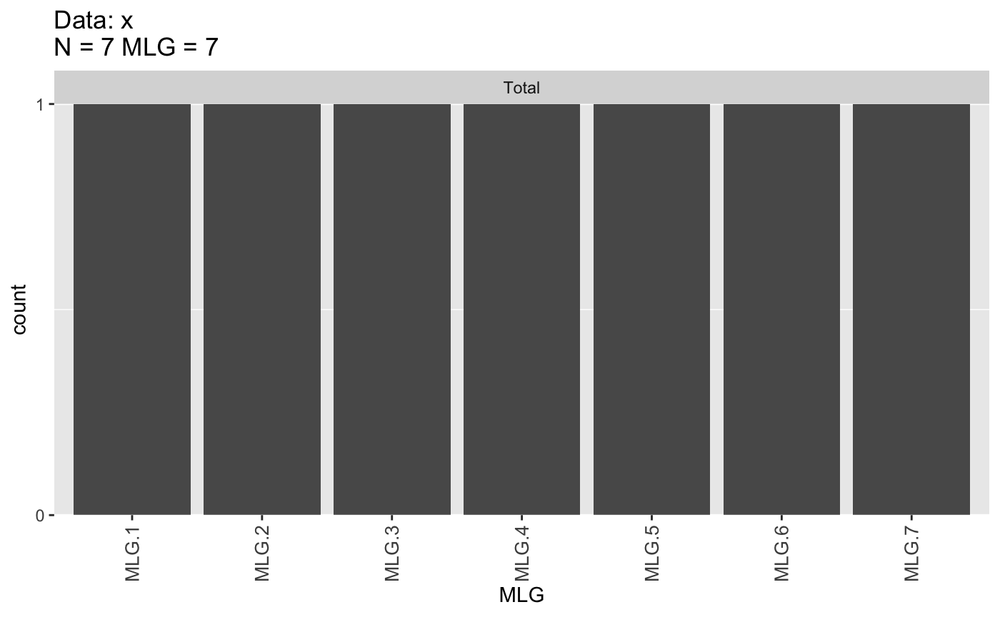
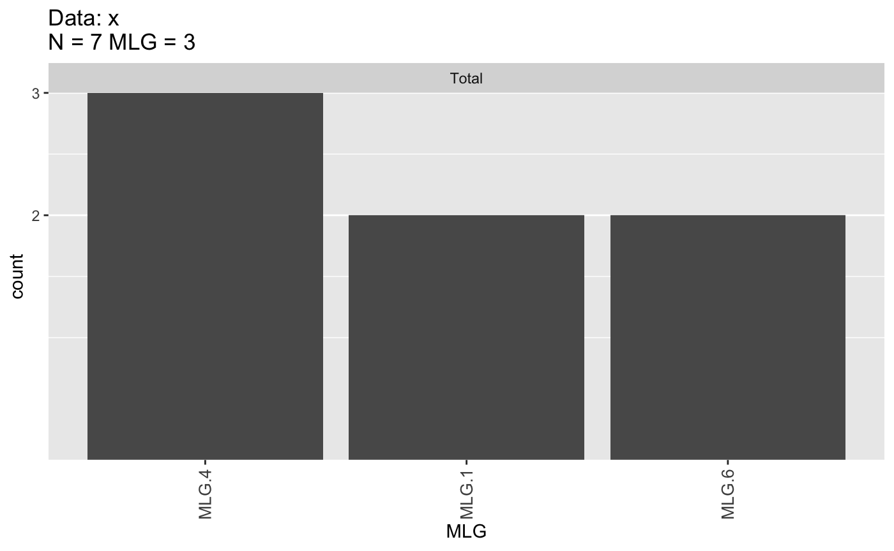
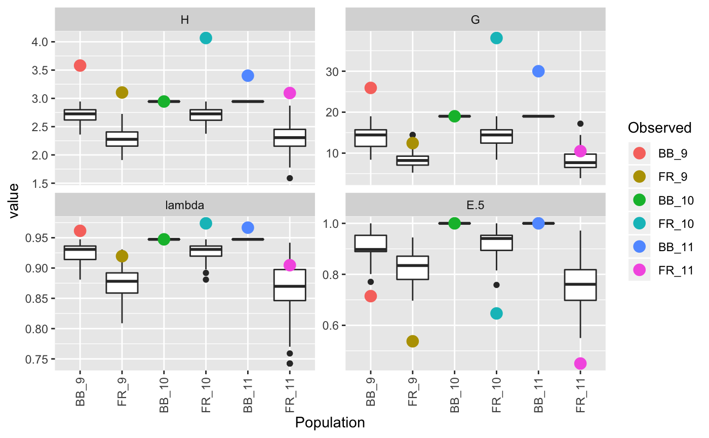

Multilocus Genotype Flavors
There are three different ways for constructing multilocus genotypes in poppr.
"original" |
Default MLG definition; strict matching |
"contracted" |
Collapsing MLGs by genetic distance with mlg.filter
|
"custom" |
User-defined multilocus genotypes |
The first is a simply naïve construction where all alleles must match to make a unique multilocus genotype. New in version 2.0 is the ability to use genetic distance to collapse multilocus genotypes or define custom multilocus lineages based on other information. You can use the function mll() to display and switch between different multilocus genotypes/lineages.
library("poppr")
data(monpop)
monpop
##
## This is a genclone object
## -------------------------
## Genotype information:
##
## 264 multilocus genotypes
## 694 haploid individuals
## 13 codominant loci
##
## Population information:
##
## 1 stratum - Pop
## 12 populations defined -
## 7_09_BB, 26_09_BB, 26_09_FR, ..., 45_10_FR, 26_11_BB, 26_11_FR
head(mll(monpop, "original"), 20) # Showing the definitions for the first 20 samples
## Warning:
## The @mlg slot does not contain an MLG class object.
## Returning the original mlgs. Please use:
##
## mll(monpop) <- "original"
##
## to convert your object.
## [1] 260 179 169 168 167 221 152 133 144 78 78 79 81 44 41 40 40
## [18] 38 119 118
Notice how we got a warning. This is because the monpop data set was created before mll() was implemented. Luckily, this warning gives us information on how to fix it.
mll(monpop) <- "original"
monpop
##
## This is a genclone object
## -------------------------
## Genotype information:
##
## 264 original multilocus genotypes
## 694 haploid individuals
## 13 codominant loci
##
## Population information:
##
## 1 stratum - Pop
## 12 populations defined -
## 7_09_BB, 26_09_BB, 26_09_FR, ..., 45_10_FR, 26_11_BB, 26_11_FR
We can see that the description says 264 original multilocus genotypes . This is how we know what the current MLG definition is for our object. Let’ see what happens when we change it.
mll(monpop) <- "custom"
monpop
##
## This is a genclone object
## -------------------------
## Genotype information:
##
## 264 custom multilocus genotypes
## 694 haploid individuals
## 13 codominant loci
##
## Population information:
##
## 1 stratum - Pop
## 12 populations defined -
## 7_09_BB, 26_09_BB, 26_09_FR, ..., 45_10_FR, 26_11_BB, 26_11_FR
Now it says 264 custom multilocus genotypes . Of course, if we look at the MLGs, we will see that they appear to be the same as our original definition:
head(mll(monpop, "custom"), 20) # Showing the definitions for the first 20 samples
## [1] 260 179 169 168 167 221 152 133 144 78 78 79 81 44 41 40 40
## [18] 38 119 118
## 264 Levels: 1 2 3 4 5 6 7 8 9 10 11 12 13 14 15 16 17 18 19 20 21 22 ... 264
All of these functions will work for both genclone and snpclone objects. In this section, we will demonstrate how to construct each of these three multilocus genotype definitions in different data sets.
Naïve (“original”)
This is the default way poppr calculates multilocus genotypes. You see it immediately when you load a genclone object. Let’s use the example monpop from (Everhart and Scherm 2015). First, we need to reset the data to our original MLGs.
mll(monpop) <- "original"
monpop
##
## This is a genclone object
## -------------------------
## Genotype information:
##
## 264 original multilocus genotypes
## 694 haploid individuals
## 13 codominant loci
##
## Population information:
##
## 1 stratum - Pop
## 12 populations defined -
## 7_09_BB, 26_09_BB, 26_09_FR, ..., 45_10_FR, 26_11_BB, 26_11_FR
You notice that there are 694 samples, yet only 264 multilocus genotypes in the data set over 13 loci. In this sub-section, I will demonstrate how these MLGs are constructed.
The naïve definition simply takes strings of alleles and compares them for equality. This method is quick and easily interpretable, but means that things like genotyping error, hyper-variable loci, and missing data all contribute to a unique genotype that might not be truly unique (Kamvar, Brooks, and Grünwald 2015).
To give an example, let’s imagine that we have five samples with alleles typed at two loci.
grid_example <- matrix(c(1, 4,
1, 1,
5, 1,
9, 1,
9, 4),
ncol = 2,
byrow = TRUE)
rownames(grid_example) <- LETTERS[1:5]
colnames(grid_example) <- c("x", "y")
grid_example
## x y
## A 1 4
## B 1 1
## C 5 1
## D 9 1
## E 9 4
We notice how they all have different multilocus genotypes. Indeed, if we analyze them, we see that there are five multilocus genotypes.
library("poppr")
x <- as.genclone(df2genind(grid_example, ploidy = 1))
tab(x) # Look at the multilocus genotype table
## x.1 x.5 x.9 y.4 y.1
## A 1 0 0 1 0
## B 1 0 0 0 1
## C 0 1 0 0 1
## D 0 0 1 0 1
## E 0 0 1 1 0
nmll(x) # count the number of multilocus genotypes
## [1] 5
mll(x) # show the multilocus genotype definitions
## [1] 5 4 3 1 2
What we did above was to analyze the tab slot of the object showing the counts of alleles per sample across the two loci. We can clearly see by eye that no two samples are alike. The nmll() function counts the number of multilocus lineages in the sample. the mll() function displays the assignment of the multilocus lineages in the sample.
Note: we used mll() to show us our multilocus lineages. Later on, we will use this same function to switch between different definitions. See ?mll for details.
Now let’s say we included another sample with partial missing data. Let’s say it was typed as allele “5” at the x locus, but missing the allele at the y locus.
x <- as.genclone(df2genind(rbind(grid_example, new = c(5, NA)), ploidy = 1))
tab(x) # Note the missing data at locus 2.
## x.1 x.5 x.9 y.4 y.1
## A 1 0 0 1 0
## B 1 0 0 0 1
## C 0 1 0 0 1
## D 0 0 1 0 1
## E 0 0 1 1 0
## new 0 1 0 NA NA
## [1] 6
## [1] 6 5 3 1 2 4
Now we see that we have 6 multilocus genotypes even though one of them contains missing data.
Let’s also imagine that we included yet another sample that had a low-frequency allele at locus y, “2”, but had the allele “5” at locus x.
grid_new <- rbind(grid_example,
new = c(5, NA),
mut = c(5, 2)
)
x <- as.genclone(df2genind(grid_new, ploidy = 1))
tab(x)
## x.1 x.5 x.9 y.4 y.1 y.2
## A 1 0 0 1 0 0
## B 1 0 0 0 1 0
## C 0 1 0 0 1 0
## D 0 0 1 0 1 0
## E 0 0 1 1 0 0
## new 0 1 0 NA NA NA
## mut 0 1 0 0 0 1
## [1] 7
## [1] 7 6 4 1 2 5 3
Again, we get completely different genotypes, but notice how the genotypes we added are closer to the genotype that shares the 5 allele. The reason this happens is because the naïve algorithm reports the rank of the concatenated alleles like so:
(xt <- apply(tab(x), 1, paste, collapse = ""))
## A B C D E new
## "100100" "100010" "010010" "001010" "001100" "010NANANA"
## mut
## "010001"
rank(xt, ties.method = "first")
## A B C D E new mut
## 7 6 4 1 2 5 3
Even though we have reason to believe that the samples “new” and “mut” might actually have the genotype x.5 and y.1 (the MLG of sample C), the algorithm sees them as different. If we calculate the pairwise euclidean distances between samples, we see that “new”, “mut” and, “C” are very similar to each other:
library("phangorn")
library("ape")
raw_dist <- function(x){
dist(genind2df(x, usepop = FALSE))
}
(xdis <- raw_dist(x))
## A B C D E new
## B 3.000000
## C 5.000000 4.000000
## D 8.544004 8.000000 4.000000
## E 8.000000 8.544004 5.000000 3.000000
## new 5.656854 5.656854 0.000000 5.656854 5.656854
## mut 4.472136 4.123106 1.000000 4.123106 4.472136 0.000000
Therefore, we might want to consider “new”, “mut” and, “C” to be the same Multilocus Lineage (MLL). In the next section, you will see how to collapse multilocus genotypes by genetic distance.
Filtered (“contracted”)
To remedy the issues with a naïve definition of multilocus genotypes, we can utilize genetic distance, which will allow us to collapse multilocus genotypes that are under a specific distance threshold. The main function we will use in this section is mlg.filter(). It will create a dissimiliarity distance matrix from the data and then filter based off of that matrix. You can also utilize your own supplied distance matrix or distance function.
Main usage
To use mlg.filter(), you need to define a thresold. This threshold defines the minimum distance to consider two genotypes unique, so anything below that will be clustered into the same MLG. In practice, it’s used like this (using the data and the euclidean distance described above):
x # We have 7 MLGs before filtering
##
## This is a genclone object
## -------------------------
## Genotype information:
##
## 7 original multilocus genotypes
## 7 haploid individuals
## 2 codominant loci
##
## Population information:
##
## 0 strata.
## 0 populations defined.
mlg.filter(x, distance = xdis) <- 1 + .Machine$double.eps^0.5
x # Now we have 5 MLGs
##
## This is a genclone object
## -------------------------
## Genotype information:
##
## 5 contracted multilocus genotypes
## (1) [t], (xdis) [d], (farthest) [a]
## 7 haploid individuals
## 2 codominant loci
##
## Population information:
##
## 0 strata.
## 0 populations defined.
mll(x) <- "original" # We'll reset to the naive definition
Here, we told mlg.filter() to set the threshold to 1 plus a very tiny number (this will be explained in the next section) based off of the distance matrix xdis. This is a way to manipulate the object in place. In this section, there will be examples of retrieving the MLGs and other statistics from the function as well as how to use different distance functions and reset the MLGs.
Thresholds
As we saw above, in order to collapse all three new samples into the original 5 MLGs, we had to set a threshold of just above 1. To show you why, we will use the function to return to us the MLGs it created and the thresholds that were passed to cluster MLLs (by using the stats argument).
## [1] 7 6 4 1 2 5 3
mlg.filter(x, distance = xdis, threshold = 1, stats = c("mlg", "thresholds"))
## $MLGS
## [1] 7 6 4 1 2 3 3
##
## $THRESHOLDS
## [1] 0
In our output, we can see that MLG 5 has collapsed into MLG 3. This occured as soon as our threshold passed 0. Take a look at what happens when we add a very small number to 1.
(e <- .Machine$double.eps^0.5) # A very tiny number
## [1] 1.490116e-08
mlg.filter(x, distance = xdis, threshold = 1 + e, stats = c("mlg", "thresholds"))
## $MLGS
## [1] 7 6 4 1 2 4 4
##
## $THRESHOLDS
## [1] 0 1
Now that we have set the threshold to just above 1, we have 5 unique MLLs since MLG 3 collapsed into MLG 4. Because of the way clustering happens, it’s important to point out what happens when you attempt to use a threshold of 0.
mlg.filter(x, distance = xdis, threshold = 0, stats = c("mlg", "thresholds"))
## $MLGS
## [1] 7 6 4 1 2 5 3
##
## $THRESHOLDS
## numeric(0)
## [1] 7 6 4 1 2 5 3
Notice that all the MLGs are the same as the originally defined MLGs. Using a threshold of zero allows two MLGs separated by zero genetic distance to remain mutually unique.
Setting the genotypes
As demonstrated at the beginning of this section, if we wanted to reassign our sample genotypes to the collapsed version, all we would have to do is use the mlg.filter() commands above, but use the <- operator to specify the threshold. Note that I will be using mlg.table() to show the distribution of the multilocus genotypes before and after filtering.
##
## This is a genclone object
## -------------------------
## Genotype information:
##
## 7 original multilocus genotypes
## 7 haploid individuals
## 2 codominant loci
##
## Population information:
##
## 0 strata.
## 0 populations defined.

## MLG.1 MLG.2 MLG.3 MLG.4 MLG.5 MLG.6 MLG.7
## Total 1 1 1 1 1 1 1
##
## This is a genclone object
## -------------------------
## Genotype information:
##
## 5 contracted multilocus genotypes
## (1) [t], (xdis) [d], (farthest) [a]
## 7 haploid individuals
## 2 codominant loci
##
## Population information:
##
## 0 strata.
## 0 populations defined.

## MLG.1 MLG.2 MLG.4 MLG.6 MLG.7
## Total 1 1 3 1 1
Notice how the information you see has changed. You can see that it’s printed out that you have 5 contracted multilocus genotypes, but you have some cryptic code underneath:
| [t] |
threshold |
| [d] |
distance (can be matrix or function) |
| [a] |
algorithm (see the next section) |
Genclone and snpclone objects will always remember what parameters were used for filtering multilocus genotypes, but the only catch is that, if you use your own supplied distance (matrix or function), you must be very careful not to delete it or change the object name.
This means that you don’t always have to specify the distance when assigning a threshold:
##
## This is a genclone object
## -------------------------
## Genotype information:
##
## 3 contracted multilocus genotypes
## (4.51) [t], (xdis) [d], (farthest) [a]
## 7 haploid individuals
## 2 codominant loci
##
## Population information:
##
## 0 strata.
## 0 populations defined.

## MLG.1 MLG.4 MLG.6
## Total 2 3 2
DANGER! DANGER! While this is a convenient function, if you use a matrix or function that was created by you, you must not delete it or change its name. Only the name of the matrix/function is stored, so if you delete the matrix/function used to inform your filtering, you will get an error:
## Error: cannot evaluate distance function, it might be missing.
Basically, your object thinks that there should be a matrix called xdis, but it can’t find it anywhere. But don’t worry, we can restore it if we have the function available. We will use the raw_dist() function that we defined earlier.
##
## This is a genclone object
## -------------------------
## Genotype information:
##
## 5 contracted multilocus genotypes
## (1) [t], (raw_dist) [d], (farthest) [a]
## 7 haploid individuals
## 2 codominant loci
##
## Population information:
##
## 0 strata.
## 0 populations defined.
The safest way, perhaps, is to use a function defined in poppr. For example, we’ll use Bruvo’s distance since it takes into account the real value of the alleles (Bruvo et al. 2004).
The arguments to your distance function will be stored in the object as well!
## A B C D E new
## B 0.4375000
## C 0.9062500 0.4687500
## D 0.9355469 0.4980469 0.4687500
## E 0.4980469 0.9355469 0.9062500 0.4375000
## new 0.9375000 0.9375000 0.0000000 0.9375000 0.9375000
## mut 0.8437500 0.7187500 0.2500000 0.7187500 0.8437500 0.0000000
mlg.filter(x, distance = bruvo.dist, replen = c(1, 1)) <- 0.44
x
##
## This is a genclone object
## -------------------------
## Genotype information:
##
## 3 contracted multilocus genotypes
## (0.44) [t], (bruvo.dist) [d], (farthest) [a]
## 7 haploid individuals
## 2 codominant loci
##
## Population information:
##
## 0 strata.
## 0 populations defined.
Of course, our multilocus genotypes are not changed forever, they are just stored in a different place. We can access the original, naïve multilocus genotypes by using the mll() function:
## [1] 7 6 4 1 2 5 3
## [1] 6 6 4 1 1 4 4
mll(x) <- "original"
mll(x) # original
## [1] 7 6 4 1 2 5 3
Tie breakers (algorithms)
Underlying mlg.filter are three algorithms that decide what genotypes go together (Kamvar, Brooks, and Grünwald 2015):
- nearest neighbor
- farthest neighbor (default)
- average neighbor (UPGMA)
You can specify which algorithm you want to use in clustering with the algorithm argument. Each of these algorithms have different behaviors when it comes to collapsing multilocus genotypes. In short, farthest neighbor is the most conservative, nearest neighbor can have a chaining effect, and average neighbor is somewhere in between. Your choice of algorithm really depends on the biology of your organism.
To help visualize this, there is the function filter_stats(), which will plot the output of the filtering algorithm. For simplicity, we will use the Pinf data set.
##
## This is a genclone object
## -------------------------
## Genotype information:
##
## 72 multilocus genotypes
## 86 tetraploid individuals
## 11 codominant loci
##
## Population information:
##
## 2 strata - Continent, Country
## 2 populations defined - South America, North America
pinfreps <- fix_replen(Pinf, c(2, 2, 6, 2, 2, 2, 2, 2, 3, 3, 2))
pinf_filtered <- filter_stats(Pinf, distance = bruvo.dist, replen = pinfreps, plot = TRUE)

We can see that the different algorithms behave quite differently.
Custom (“custom”)
Sometimes multilocus genotypes are defined by more than just genetic data and it would be useful to be able to analyze these genotype definitions. Luckily, there is a way to do this. Poppr has support for custom multilocus genotypes. For example, we have a simulated data set that has 50 samples with 26 multilocus genotypes.
## [1] 8 9 23 24 22 21 10 3 22 11 24 9 25 4 12 2 14 1 9 9 9 26 7
## [24] 13 23 3 17 22 6 20 22 12 5 25 13 21 15 13 13 13 2 19 18 13 23 16
## [47] 1 11 25 4
Let’s change the MLGs to letters instead of numbers. We will use mll.custom() to do this.
LETTERS[mll(pc)] # The new MLGs
## [1] "H" "I" "W" "X" "V" "U" "J" "C" "V" "K" "X" "I" "Y" "D" "L" "B" "N"
## [18] "A" "I" "I" "I" "Z" "G" "M" "W" "C" "Q" "V" "F" "T" "V" "L" "E" "Y"
## [35] "M" "U" "O" "M" "M" "M" "B" "S" "R" "M" "W" "P" "A" "K" "Y" "D"
## A B C D E F G H I J K L M N O P Q R S T U V W X Y Z
## 1 0 1 0 0 1 1 0 1 1 0 0 0 0 1 1 0 0 0 0 0 0 2 2 0 2 0
## 2 1 0 1 2 0 0 0 0 1 0 1 0 1 0 0 1 0 0 1 1 1 0 0 0 1 1
## 3 1 0 0 0 0 0 1 0 1 1 0 1 2 0 0 0 1 1 0 0 0 1 1 1 0 0
## 4 0 1 1 0 0 0 0 0 2 0 1 1 3 0 0 0 0 0 0 0 1 1 0 1 0 0
This even works with minimum spanning networks:
pcpal <- colorRampPalette(c("blue", "gold"))
set.seed(9001)
pcmsn <- bruvo.msn(pc, replen = rep(1, nLoc(pc)), palette = pcpal,
vertex.label.color = "firebrick", vertex.label.font = 2,
vertex.label.cex = 1.5)

Let’s say that we realized that we have strong evidence for MLG “Q” being the same as MLG “M”. If we wanted to change those, we could simply change the factor levels:
And we can plot again
set.seed(9001)
pcmsn <- bruvo.msn(pc, replen = rep(1, nLoc(pc)), palette = pcpal,
vertex.label.color = "firebrick", vertex.label.font = 2,
vertex.label.cex = 1.5)

Notice how the minimum spanning network architecture stayed the same, but the labels had changed.
Diversity Analysis
In the Data Import and Manipulation vignette, the first command demonstrated was the poppr(), command, which produced a table of diversity statistics, most of which were calculated on counts of multilocus genotypes. These statistics can be replicated by using the function diversity_stats(). This function calculates diversity statistics based off of a table of multilocus genotypes. Let’s analyze the diversity of the peach brown rot pathogen, Monilinia fructicola, structured by Symptom (Fruit Rot:FR and Blossom Blight:BB) and Year (Everhart and Scherm 2015). Let’s first look at the distribution of multilocus genotypes:
data(monpop)
splitStrata(monpop) <- ~Tree/Year/Symptom
montab <- mlg.table(monpop, strata = ~Symptom/Year)
We can see from these plots that the Fruit Rot (FR) have a lot more clones in the canopies than Blossom Blight (BB). This makes biological sense since Fruit Rot infections are clonally propagated, whereas Blossom Blight infections are from sexual propagules (Everhart and Scherm 2015). Let’s look at the diversity metrics.
Basic Statistics
The function diversity_stats() is used to get basic diversity statistics:
## Index
## Pop H G lambda E.5
## BB_9 3.580258 25.92405 0.9614258 0.7145086
## FR_9 3.103899 12.43711 0.9195955 0.5373402
## BB_10 2.944439 19.00000 0.9473684 1.0000000
## FR_10 4.066838 38.10132 0.9737542 0.6466786
## BB_11 3.401197 30.00000 0.9666667 1.0000000
## FR_11 3.094688 10.48941 0.9046657 0.4501543
Confidence Intervals
We can get confidence intervals for these statistics using diversity_ci():
##
## Confidence Intervals have been centered around observed statistic.
## Please see ?diversity_ci for details.

## H H.est H.ci G G.est G.ci lambda
## BB_9 3.58 3.19 (3.341, 3.819) 25.9 19.26 (19.298, 32.55) 0.961
## FR_9 3.10 2.97 (2.912, 3.296) 12.4 11.98 (9.918, 14.956) 0.920
## BB_10 2.94 2.37 (2.664, 3.225) 19.0 9.81 (15.986, 22.014) 0.947
## FR_10 4.07 3.87 (3.926, 4.207) 38.1 33.63 (31.199, 45.004) 0.974
## BB_11 3.40 2.83 (3.173, 3.629) 30.0 15.28 (26.066, 33.934) 0.967
## FR_11 3.09 2.85 (2.802, 3.387) 10.5 9.81 (6.73, 14.249) 0.905
## lambda.est lambda.ci E.5 E.5.est E.5.ci
## BB_9 0.946 (0.942, 0.981) 0.715 0.776 (0.599, 0.83)
## FR_9 0.916 (0.902, 0.937) 0.537 0.593 (0.488, 0.587)
## BB_10 0.895 (0.913, 0.981) 1.000 0.894 (0.921, 1.079)
## FR_10 0.970 (0.968, 0.98) 0.647 0.691 (0.579, 0.714)
## BB_11 0.933 (0.948, 0.986) 1.000 0.889 (0.936, 1.064)
## FR_11 0.894 (0.861, 0.949) 0.450 0.533 (0.35, 0.55)
You can see that there was a warning about centering the confidence interval. The boxplots you see are the distribution of the bootstrapped replicates, but they are known to be biased. We invite users to please read the documentation for diversity_ci() by typing ?diversity_ci. It is very important to be careful when interpreting these results because sometimes confidence the confidence intervals exist outside of the possible range, as exemplified by BB_10 and BB_11.
Custom Statistics
In all of the diversity_* functions, you can use your own custom diversity statistics. A common one we get requests for is the clonal fraction, \(\frac{MLG}{N}\) or the number of multilocus genotypes over the number of samples. You can add it in by writing your own function. Keep in mind, that you should write it for both a matrix and a vector of counts if you want to be able to bootstrap it.
myCF <- function(x){
x <- drop(as.matrix(x))
if (length(dim(x)) > 1){ # if it's a matrix
res <- rowSums(x > 0)/rowSums(x)
} else { # if it's a vector
res <- sum(x > 0)/sum(x)
}
return(res)
}
(monstat2 <- diversity_stats(montab, CF = myCF))
## Index
## Pop H G lambda E.5 CF
## BB_9 3.580258 25.92405 0.9614258 0.7145086 0.7031250
## FR_9 3.103899 12.43711 0.9195955 0.5373402 0.2585366
## BB_10 2.944439 19.00000 0.9473684 1.0000000 1.0000000
## FR_10 4.066838 38.10132 0.9737542 0.6466786 0.3405018
## BB_11 3.401197 30.00000 0.9666667 1.0000000 1.0000000
## FR_11 3.094688 10.48941 0.9046657 0.4501543 0.4536082
You can use filtered or custom MLGs to compare diversity. Here, I’m filtering genotypes in monpop that are different by only a single mutational step (Bruvo et al. 2004).
One mutational step for a single allele in Bruvo’s distance is equivalent to 0.5, so a single mutational step for a haploid organism with 13 loci is 0.5/13.
# Repeat lengths are necessary
reps <- fix_replen(monpop,
c(CHMFc4 = 7, CHMFc5 = 2, CHMFc12 = 4,
SEA = 4, SED = 4, SEE = 2, SEG = 6,
SEI = 3, SEL = 4, SEN = 2,
SEP = 4, SEQ = 2, SER = 4))
# Adding a little bit, so the threshold is included.
e <- .Machine$double.eps^0.5
# Using the default farthest neighbor algorithm to collapse genotypes
mlg.filter(monpop, distance = bruvo.dist, replen = reps) <- (0.5/13) + e
montabf <- mlg.table(monpop, strata = ~Symptom/Year)

## Index
## Pop H G lambda E.5 CF
## BB_9 3.442117 23.81395 0.9580078 0.7541044 0.6093750
## FR_9 3.003859 11.99001 0.9165973 0.5734961 0.2195122
## BB_10 2.944439 19.00000 0.9473684 1.0000000 1.0000000
## FR_10 3.861202 33.10974 0.9697974 0.6901987 0.2724014
## BB_11 3.401197 30.00000 0.9666667 1.0000000 1.0000000
## FR_11 2.754565 8.00766 0.8751196 0.4762511 0.3195876
monstat2 - monstatf # Take the difference from the unfiltered
## Index
## Pop H G lambda E.5 CF
## BB_9 0.1381408 2.1100971 0.003417969 -0.03959575 0.09375000
## FR_9 0.1000406 0.4470973 0.002998215 -0.03615591 0.03902439
## BB_10 0.0000000 0.0000000 0.000000000 0.00000000 0.00000000
## FR_10 0.2056360 4.9915810 0.003956784 -0.04352013 0.06810036
## BB_11 0.0000000 0.0000000 0.000000000 0.00000000 0.00000000
## FR_11 0.3401226 2.4817496 0.029546179 -0.02609686 0.13402062
We can see that filtered MLLs tend to be less diverse. This makes intuitive sense as it is creating larger classes of multilocus genotypes.
mll(monpop) <- "original"
Jack-knife rarefaction
The function diversity_ci() and diversity_boot() have the option to perform jack knife rarefaction calculations. This means that your data will be randomly sub-sampled to either the smallest population size, or whatever is specified in the parameter n.rare, whichever is bigger. Here’s an example with the previous data set:
(monrare <- diversity_ci(montab, n = 100L, rarefy = TRUE, raw = FALSE))
##
## Samples for rarefaction: 19
## H H.est H.ci G G.est G.ci lambda
## BB_9 3.58 2.70 (2.465, 2.871) 25.9 13.70 (9.757, 17.19) 0.961
## FR_9 3.10 2.27 (1.934, 2.625) 12.4 8.35 (5.819, 12.448) 0.920
## BB_10 2.94 2.94 <NA> 19.0 19.00 <NA> 0.947
## FR_10 4.07 2.69 (2.406, 2.871) 38.1 13.91 (10.022, 17.19) 0.974
## BB_11 3.40 2.94 <NA> 30.0 19.00 <NA> 0.967
## FR_11 3.09 2.30 (1.826, 2.698) 10.5 8.12 (4.009, 13.37) 0.905
## lambda.est lambda.ci E.5 E.5.est E.5.ci
## BB_9 0.925 (0.898, 0.942) 0.715 0.906 (0.801, 0.972)
## FR_9 0.875 (0.828, 0.92) 0.537 0.825 (0.698, 0.941)
## BB_10 0.947 <NA> 1.000 1.000 <NA>
## FR_10 0.926 (0.9, 0.942) 0.647 0.922 (0.817, 0.972)
## BB_11 0.947 <NA> 1.000 1.000 <NA>
## FR_11 0.865 (0.75, 0.925) 0.450 0.759 (0.565, 0.896)
This can give you comparable estimates of diversity when not all samples are of equal size.
Clone Correction
Clone-correction works hierarchically and only uses the first MLG copy encountered in the data per population. This is straightforward for naïve MLGs, but for MLLs collapsed by genetic distance or custom MLLs, this might change the results very slightly. As an example, let’s look at the monpop filtered MLLs that we created earlier.
## [1] 264
nmll(monpop, "contracted")
## [1] 214
mll(monpop) <- "contracted"
To show how the order of the samples can affect the sampling, we will take the sum of all pairwise distances between clone-corrected samples (corrected without respect to populations):
monpop %>%
clonecorrect(strata = NA) %>% # 1. clone correct whole data set
dist() %>% # 2. calculate distance
sum() # 3. take the sum of the distance
## [1] 90268.73
Now, what happens when we randomly sample individuals?
set.seed(999)
monpop[sample(nInd(monpop))] %>% # 1. shuffle samples
clonecorrect(strata = NA) %>% # 2. clone correct whole data set
dist() %>% # 3. calculate distance
sum() # 4. take the sum of the distance
## [1] 90359.52
set.seed(1000)
monpop[sample(nInd(monpop))] %>% # 1. shuffle samples
clonecorrect(strata = NA) %>% # 2. clone correct whole data set
dist() %>% # 3. calculate distance
sum() # 4. take the sum of the distance
## [1] 90324.07
Notice how we are getting different results based on the order of samples. This does not mean that the procedure doesn’t work, it just means that we must be careful when clone-correcting modified multilocus genotypes.